Mankind was born on Earth. It was never meant to die here.
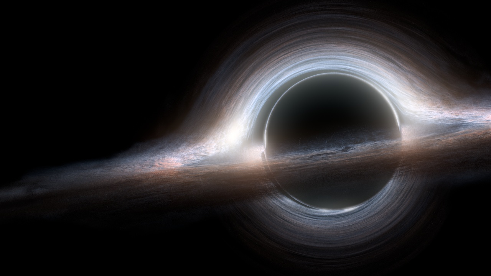
DO NOT GO GENTLE INTO THAT GOOD NIGHT
In the near future, Earth suffers from crop blight, starvation, and devastating dust storms. Cooper, an ex-NASA test pilot-turned-farmer, raises his children, Murph and Tom, with the help of his father-in-law, Donald, following the death of his wife. Murph believes a "ghost" is trying to communicate with her through her bookshelf but is met with skepticism. Following a severe dust storm, Murph's bedroom experiences dust being pulled by gravity into lines of binary, which reveal coordinates to a secret NASA facility.
At the facility, mission leader Professor Brand recruits Cooper for a last-ditch mission to save humanity on Earth by finding habitable planets outside the solar system via a wormhole near Saturn, which scientists deduce is a creation of beings dubbed "they" who have guided humanity for years. Three previous NASA explorers have crossed the wormhole and reported on their planets being potentially habitable: Miller, Mann and Edmunds. Cooper joins scientists Amelia Brand, Romilly, and Doyle on their mission to retrieve the data collected by the explorers. Cooper bids farewell to his children, promising to return.
Click here to know more about this film.
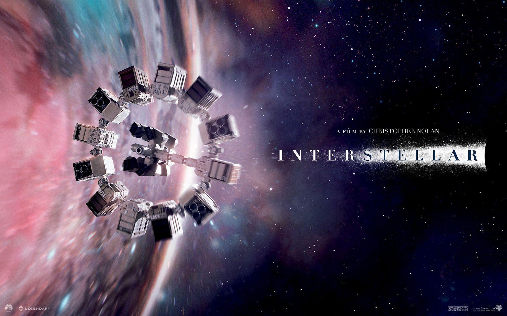
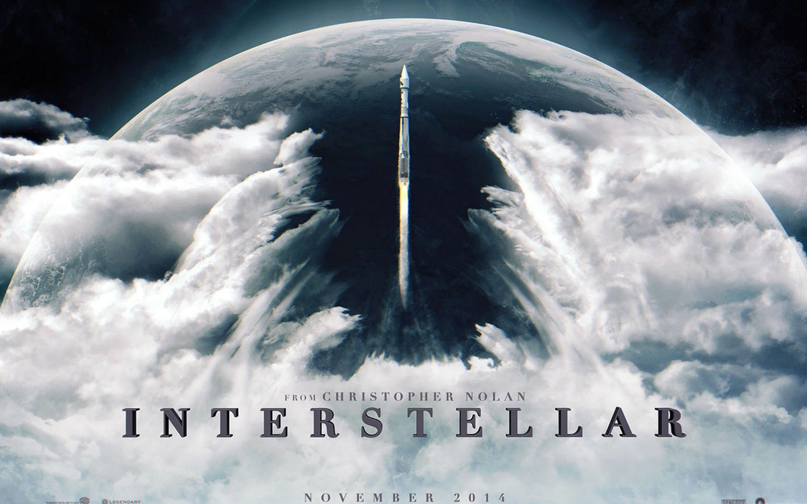
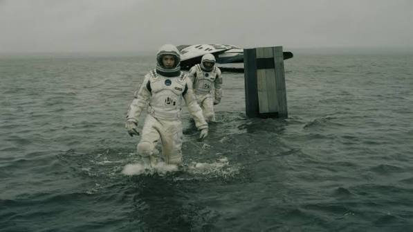
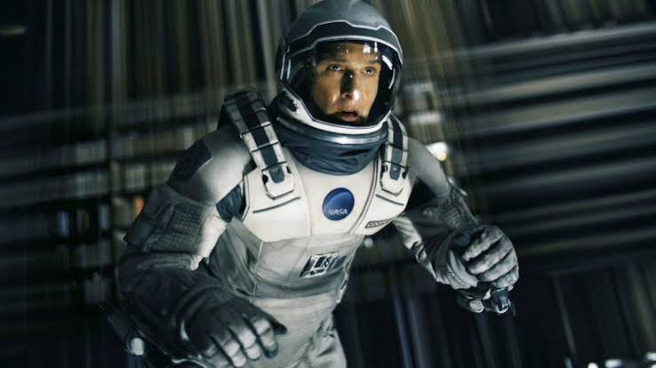
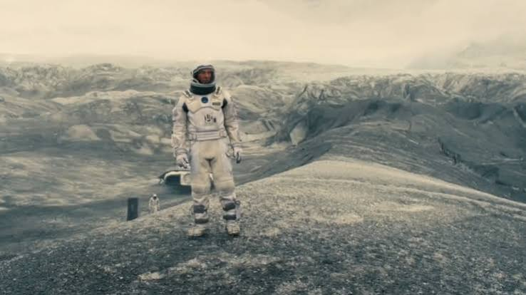
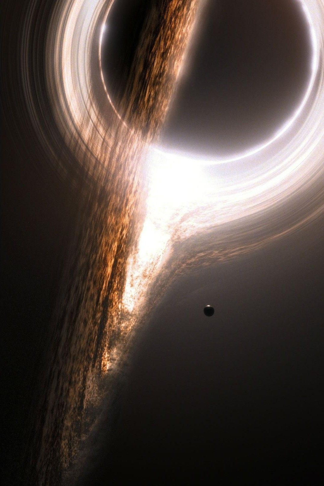
Gargantua is a fictional supermassive black hole featured in Christopher Nolan's 2014 sci-fi film Interstellar.
Key Characteristics of Gargantua:-
Mass:It has a mass equal to 100 million times that of our Sun.
Spin: It rotates at 99.8 percent the speed of light, which drags spacetime around it at near-light speed.
Location: It resides in a distant galaxy roughly 10 billion light-years away from Earth, accessible via a wormhole near Saturn.
Orbiting Worlds: It is orbited by extreme planets, notably Miller's Planet, where extreme time dilation means one hour on the surface equals seven years on Earth.
The Endurance is the circular interplanetary spacecraft from Christopher Nolan's film Interstellar designed to carry astronauts through a wormhole to find a new home for humanity.
Design and Features:
Ring Structure: Measures roughly 64 to 72 meters in diameter, composed of 12 modular pods connected by tunnels.
Artificial Gravity: Spins at roughly 5 to 6 RPM (completing a rotation every 12 seconds) to create 1g of centrifugal force for the crew.
Key Modules: Includes a command center, habitation quarters, a cryo-hibernation lab, and engine compartments powered by compact fusion plants.
Support Craft: Carries smaller Ranger and Lander vehicles used for planetary surface descents.
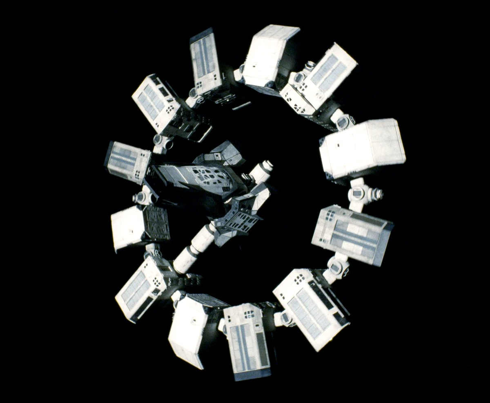
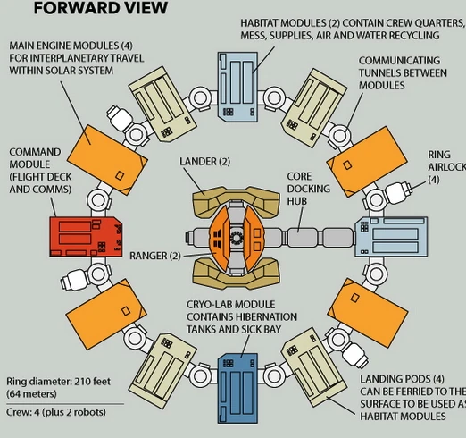
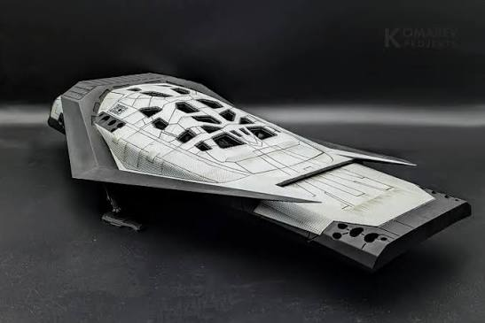
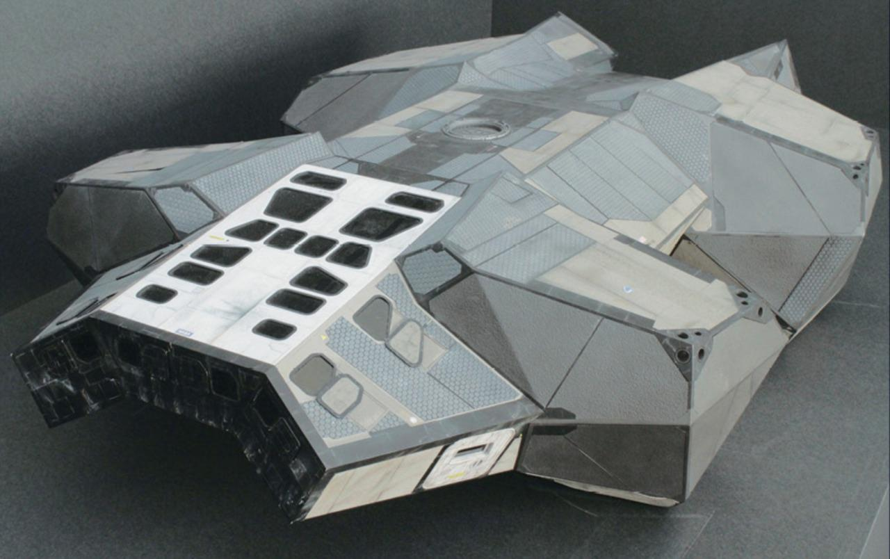
Sir Christopher Nolan is a British and American film director, screenwriter, and film producer.
His feature directorial debut was the neo-noir crime thriller Following (1998)
which was made on a budget of $6,000.
Two years later, he directed the psychological thriller Memento (2000)
which starred Guy Pearce as a man suffering from anterograde amnesia (short-term memory loss) searching for his wife's killer.
Similar to his debut feature, this film had a non-linear narrative structure.
It served as his breakthrough film.
It was acclaimed by critics and was a surprise commercial success
For the film Nolan received his first nomination for the Directors Guild of America Award for Outstanding Directing – Feature Film, and for writing
its screenplay
he was nominated for the Academy Award for Best Original Screenplay.
He next directed the mystery thriller remake Insomnia (2002) which starred Al Pacino,
Robin Williams, and Hilary Swank.
It was his first film for Warner Bros., and was a critical and commercial success.
IMDb RATING: 8.7/10 To know more about ratings and popularity click the below link.
Click here for reviews| NAME OF THE MOVIE | ROTTEN TOMATOES | PRIME VIDEO | IMDb |
|---|---|---|---|
| INTERSTELLAR | 73%/100 | 4.6/5 | 8.7/10 |
It has an ensemble cast led by:


Earth is dying due to a global crop blight, forcing humanity to find a new home.
A former pilot named Cooper joins a secret NASA mission to save the human race.
The team travels through a mysterious wormhole near Saturn to enter another galaxy.
Their goal is to scout three potential planets to see if any can support human life.
High gravity near a massive black hole causes extreme time dilation for the crew.
An hour spent on one alien planet equals seven full years passing back on Earth.
Cooper watches his children grow into adults via delayed video messages while he stays young.
Driven by love for his daughter, Murphy, Cooper risks everything to send crucial data home.
Using gravity and a higher dimension, he successfully transmits the physics equation she needs.
Murphy solves the equation, allowing humanity to evacuate Earth and build a future in space.
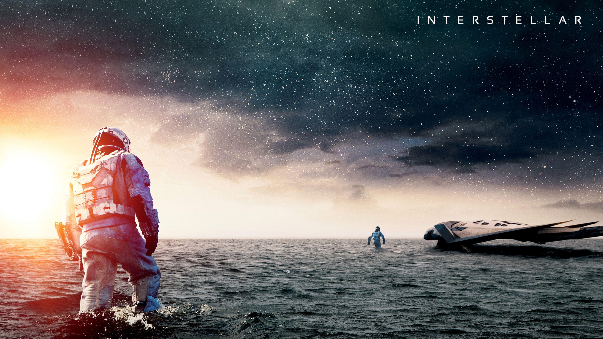
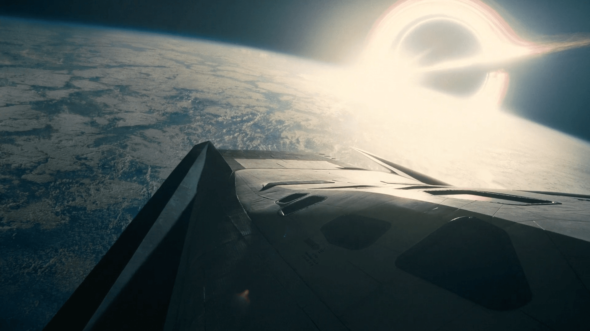
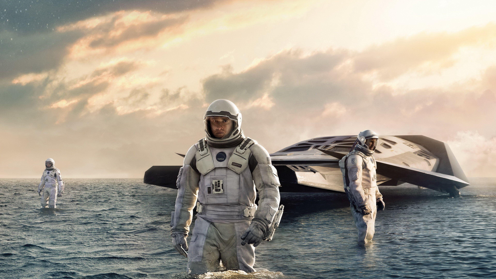
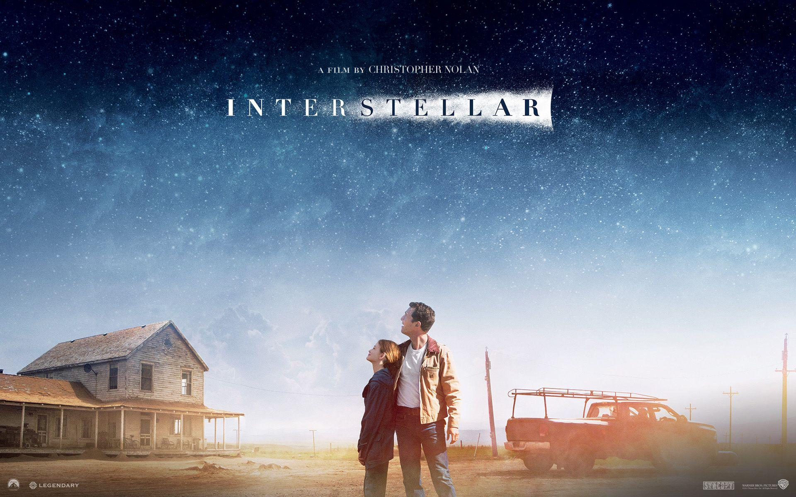
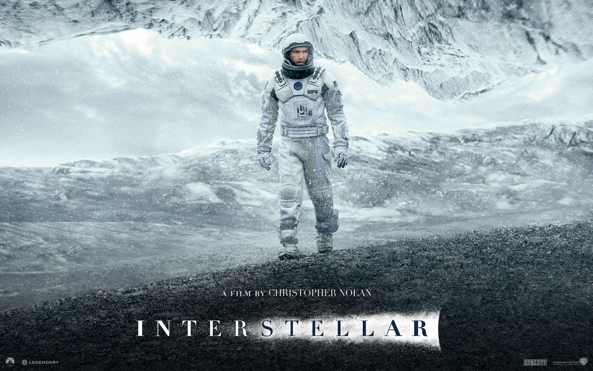

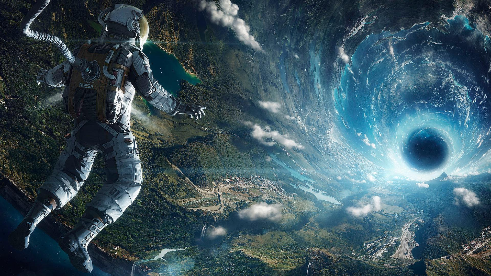
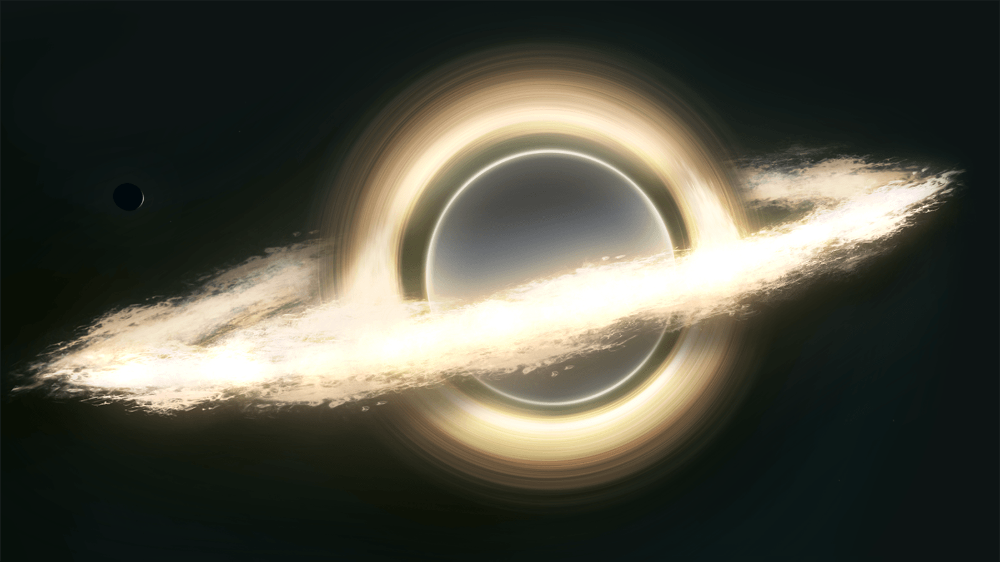
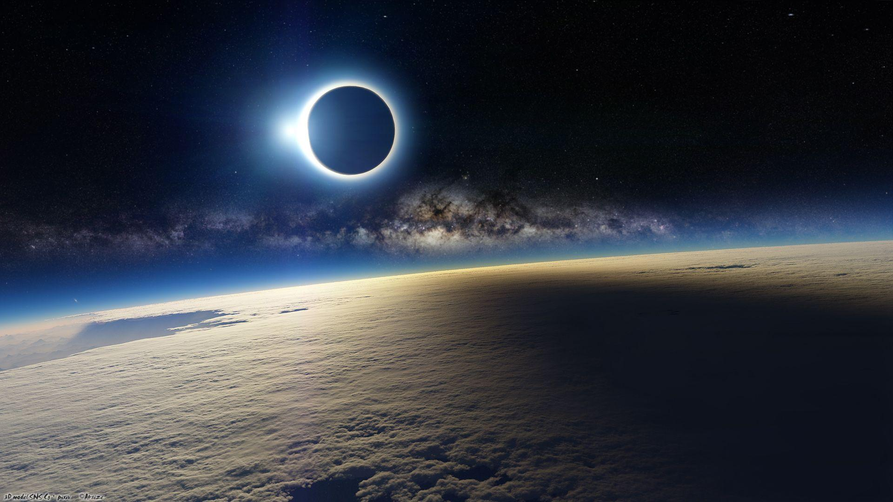
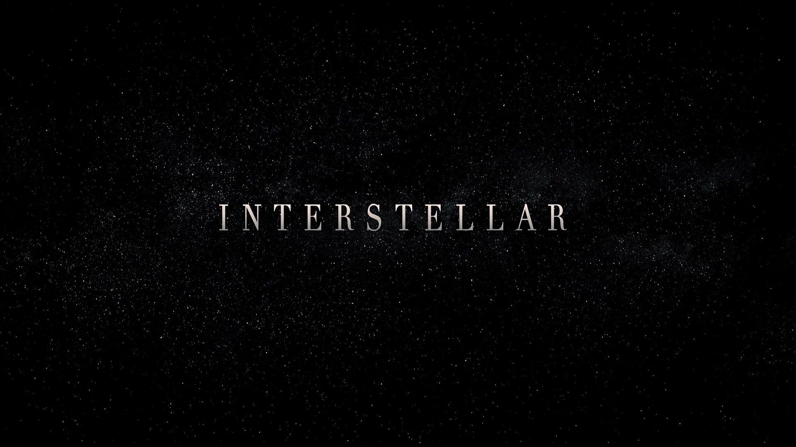